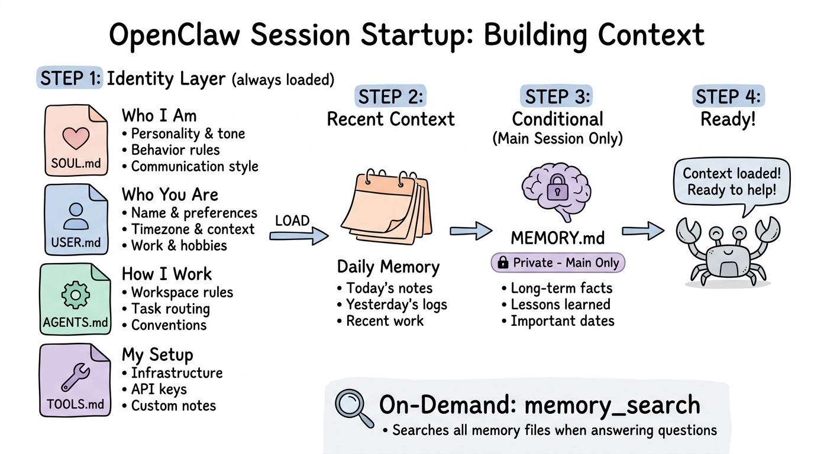

I’ve been playing with OpenClaw’s memory system lately, and I have to say—I’m genuinely impressed by how it works. At first, it seemed like magic, but once I understood the mechanics, I realized it’s actually a brilliantly simple system that you can learn to work with effectively. In this post, I’ll share what I’ve learned about how OpenClaw’s memory architecture works and, more importantly, how to get the most out of it.
The complete source code and documentation are available in the OpenClaw repository.
The Memory Problem
Most AI assistants treat every conversation as a blank slate. You can use long context windows (100K+ tokens) to load chat history, but that’s expensive, slow, and hits limits quickly. There had to be a better way.
OpenClaw solves this by separating memory into distinct layers:
- Identity files that define who the agent is
- Long-term memory with curated knowledge
- Daily logs that capture recent activity
- Semantic search that finds relevant context on demand
The key insight I gained: every conversation starts with zero memory. What makes OpenClaw feel persistent isn’t magic—it’s a clever system of context loading from standard markdown files.
The Four Memory Layers

OpenClaw’s session startup sequence: How context is built from SOUL.md, USER.md, AGENTS.md, TOOLS.md, daily files, and MEMORY.md
Layer 1: SOUL.md - The Agent’s Personality
Every OpenClaw agent has a SOUL.md file that defines its core personality and behavior. This file is loaded in every single session, providing the foundation for how the agent communicates.
Here’s what mine looks like:
1 | ## Core Truths |
This isn’t just flavor text—it fundamentally changes how the agent behaves. A well-crafted SOUL.md makes the difference between a generic chatbot and an assistant with real character.
Layer 2: MEMORY.md - Long-Term Knowledge
MEMORY.md is the agent’s curated knowledge base. This is where important facts, learned lessons, and key context live. Unlike daily logs (which are chronological and verbose), MEMORY.md is carefully organized and maintained.
Security note: This file is only loaded in main sessions (direct 1:1 chats with the owner). In group chats or public channels, MEMORY.md stays private. Your agent won’t accidentally leak personal information.
Example from mine:
1 | ## 2026-02-17 — Note-Taking System |
Over time, MEMORY.md becomes a personal encyclopedia of workflows, preferences, and hard-won lessons.
Layer 3: Daily Memory Files - The Raw Logs
Every day gets its own file: memory/2026-03-31.md. These are chronological logs of what happened—tasks completed, conversations, errors encountered, decisions made.
The agent loads today’s and yesterday’s daily files on startup, giving it immediate short-term context without having to search.
Example daily note:
1 | # 2026-03-26 |
These daily files serve two purposes:
- Short-term context for the next day or two
- Source material for updating
MEMORY.mdduring periodic reviews
Layer 4: memory_search - Semantic Search
Here’s where it gets interesting. The agent doesn’t load everything—it searches for relevant context using semantic similarity.
Before answering questions about past activities, the agent:
- Runs
memory_search("your question") - Gets back the most relevant snippets from all memory files
- Uses
memory_getto pull only the specific lines needed - Builds context with just what’s relevant
This means the agent can find a conversation from three weeks ago without loading three weeks of logs into context.
The Startup Sequence
When an agent wakes up in a new session, here’s what it loads:
Step 1: Identity Layer (always loaded)
1 | 1. SOUL.md → Personality, behavior, tone |
Step 2: Recent Context (always loaded)
1 | 6. memory/YYYY-MM-DD.md (today) |
Step 3: Long-Term Memory (main session only)
1 | 8. IF in main session (1:1 with owner): |
Step 4: Dynamic Search (on-demand)
1 | 9. When answering questions: |
Context Building in Action
Let’s walk through a real example. Say I send this message:
“Can you help me with that security script we worked on last week?”
Here’s what happens:
Identity Layer (loaded on startup):
- SOUL.md: Agent knows its personality
- USER.md: Knows my name, timezone, context
- IDENTITY.md: Knows it’s Clawman 🦀
Recent Context (loaded on startup):
- Today’s daily file (mostly empty)
- Yesterday’s daily file (recent activity)
Semantic Search (triggered by question):
1 | memory_search("security script network validation") |
Search Results:
1 | memory/2026-03-26.md, lines 3-8: |
Now the agent has:
- Who it is (SOUL.md)
- Who I am (USER.md)
- What the security script does (from memory search)
- Where the script is (from memory search)
- Recent conversation flow (daily files)
It can answer confidently with specific details—not because it remembers everything, but because it found the right information efficiently.
Memory Maintenance
Agents actively maintain their memory during idle periods (heartbeat polls):
- Review recent daily files
- Identify significant events or lessons
- Update MEMORY.md with distilled insights
- Clean up outdated information
Think of it like a human reviewing their journal and updating their mental model. The memory system isn’t static—it evolves over time.
Why This Architecture Matters
Traditional approaches have two extremes:
- No memory - Fresh start every time (frustrating)
- Full context - Load entire chat history (expensive, slow, hits token limits)
OpenClaw’s layered approach gives you:
- ✅ Persistent identity across sessions
- ✅ Efficient context loading (only what’s relevant)
- ✅ Semantic search for historical recall
- ✅ Privacy boundaries (session-aware loading)
- ✅ Transparent memory (plain text files you can edit)
- ✅ Scalable (doesn’t require massive context windows)
Tips and Tricks: Getting the Most Out of OpenClaw’s Memory
Through my experimentation, I’ve discovered several techniques that dramatically improve how you work with OpenClaw:
1. Start Conversations with Explicit Recall
Remember: every conversation starts with zero loaded memory beyond the standard context files. The agent doesn’t automatically load everything—you need to tell it what’s relevant.
Instead of this:
“Can you help with that project we discussed?”
Do this:
“Recall our previous discussions about Project X, then help me with the next steps.”
This triggers memory_search to pull relevant context before the agent responds.
2. Use Targeted Memory Queries
I often use the QMD (Query Memory Data) approach—asking the agent to search specific topics:
“Search your memory for anything related to [specific topic] and summarize what you find.”
This loads relevant context into the conversation, making subsequent responses much more accurate.
3. Understand What’s Always Loaded
Every conversation automatically loads:
SOUL.md(personality)USER.md(your info)AGENTS.md(workspace rules)TOOLS.md(your setup notes)- Today and yesterday’s daily files
MEMORY.md(only in direct 1:1 chats)
Everything else? You need to ask for it via memory_search.
4. Prime the Context Early
If you’re starting a work session, prime the context upfront:
“Before we begin, recall everything about Project X, including our architecture decisions and any blockers we documented.”
This loads the right context once, rather than discovering gaps mid-conversation.
5. Verify What’s Loaded
You can ask: *”What context do you have about [topic] right now?”*
The agent will tell you what it found via memory search, helping you understand if you need to provide more context.
Security and Privacy
The memory architecture has built-in privacy protections:
Session-Aware Loading:
- Main session (1:1 chat): Full access to MEMORY.md
- Group chats/Discord: MEMORY.md stays private
- Isolated subagents: Only get task-specific context
Explicit Boundaries:
Agents know what’s in memory and what’s not. If memory_search returns nothing, they say so. No hallucinated memories.
User Control:
All memory files are plain text markdown. You can read, edit, or delete anything. No black boxes.
Try It Yourself
OpenClaw is open source and free to use:
- Install:
npm install -g openclaw - Check workspace: Look in
~/.openclaw/workspace/ - Read memory files:
SOUL.md,MEMORY.md,memory/*.md - Experiment: Try different memory queries to see what gets loaded
The entire memory system is transparent—what you see is what the agent sees.
Final Thoughts
Here’s what I’ve learned: OpenClaw’s memory isn’t magic, but understanding how it works makes all the difference.
When I first started, I expected the agent to “just remember” everything. It doesn’t. Every conversation starts fresh, with only standard context files loaded. Everything else lives in memory files, waiting to be retrieved via memory_search.
Once I understood this, I changed my approach—priming conversations with explicit recall, verifying what’s loaded, and understanding the limits. The result? Much more accurate, context-aware responses.
The key insight: You get much better results when your context contains only the relevant information for your goal. By managing what gets loaded, I:
- Avoid context rot — No irrelevant clutter
- Save money on tokens — Load only what’s necessary
- Use the agent optimally — Focused context = better outcomes
- Achieve goals faster — The agent works on what matters
This understanding applies to any AI agent system—whether you’re using ChatGPT, GitHub Copilot CLI, Claude Projects, or other frameworks. The fundamental principles remain the same:
- Every conversation starts with limited context
- Context must be explicitly loaded
- You control what the agent knows
It’s not just about remembering—it’s about remembering the right things at the right time.
Want to learn more? Check out the OpenClaw documentation or join the Discord community.